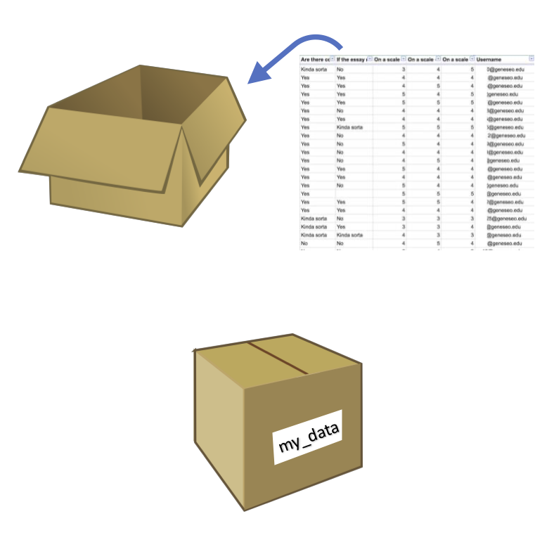
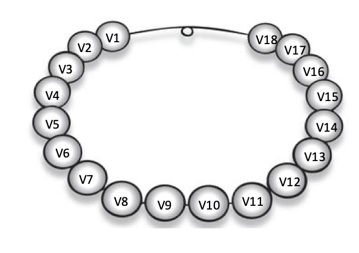
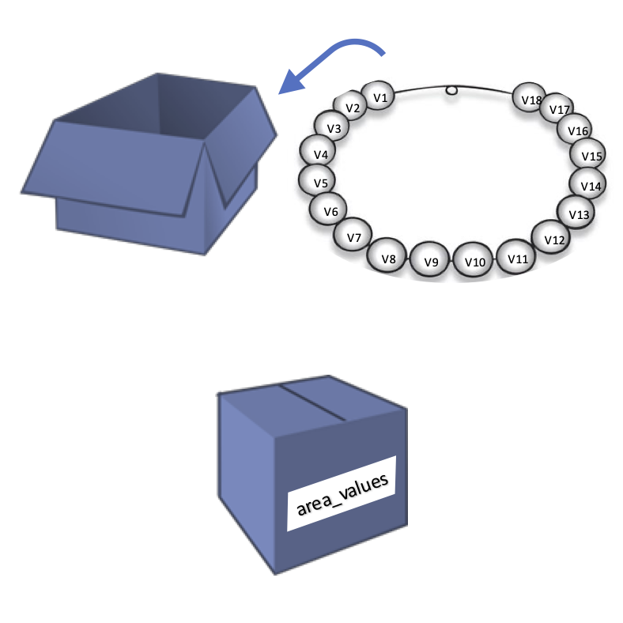

1 Dataframes, vectors and numbers
1.1 Dataframes
The usual data you will deal with are tabular (rows x columns) data, usually improperly called “Excel files”.
The standard formats for raw data files in data analyses are .csv, .tsv and .txt files; these should be our starting point.
1.2 Import file
The first thing to do is to import the file into R session. We can do it with several functions, but the standard one for .csv files is read.csv.
Let’s see how to do so:
1.2.0.1 Notes about variables
Variables are the “memory” of an R session, they represent box where R stores data/values you want.
You can think them as boxes that have a name on them:

There are important rules about variables:
In each variable you can store one single item (a number, a string, a dataframe, a list, …)
variable names can start only with a letter (uppercase or lowercase)
variable names can contain only letters, numbers, underscores (_) and dots (.). No spaces, no dash (-) or any other special characters
there could be only ONE variable with a specific name, saving an object with the same of another results in the substitution of the first one
suggestion: variable names should be meaningful to you (and to the ones you share the code with): e.g.
xis not a good name, whilepatients_glucose_datais preferred
1.2.1 First steps on a dataframe
When importing a dataframe, there is a fundamental step to do: inspection. Inspection helps us to understand how the dataframe is structured, which type of data we have, which columns etc.
To do it, we use 3 functions that you need to remember (tatoo yourself): summary, str and head. Let’s see them:
sample timepoint genotype treatment area intensity
Min. : 1.00 Length:192 Length:192 Length:192 Min. :3000 Min. : 9130286
1st Qu.: 48.75 Class :character Class :character Class :character 1st Qu.:3259 1st Qu.:16283904
Median : 96.50 Mode :character Mode :character Mode :character Median :3517 Median :18894104
Mean : 96.50 Mean :3508 Mean :19419175
3rd Qu.:144.25 3rd Qu.:3769 3rd Qu.:22090201
Max. :192.00 Max. :3988 Max. :29812114 'data.frame': 192 obs. of 6 variables:
$ sample : int 1 2 3 4 5 6 7 8 9 10 ...
$ timepoint: chr "P1" "P1" "P1" "P1" ...
$ genotype : chr "wt" "wt" "wt" "wt" ...
$ treatment: chr "n" "n" "n" "n" ...
$ area : num 3125 3500 3773 3538 3936 ...
$ intensity: num 16015465 19449815 21118210 18100075 20718554 ...We can see how many rows and columns we have, as well as which columns, the data type of each and the first entries.
Lastly, head is the function that shows us the first 6 entries of the dataframe, as a table:
sample timepoint genotype treatment area intensity
1 1 P1 wt n 3124.709 16015465
2 2 P1 wt n 3499.559 19449815
3 3 P1 wt n 3773.000 21118210
4 4 P1 wt n 3538.320 18100075
5 5 P1 wt n 3936.014 20718554
6 6 P1 wt n 3646.389 195071101.3 Vectors
Dataframes are organized and read by columns. Each column is a vector in R.
A vector is a collection of data of the same type; you can think of a vector as a pearl necklace, with each pearl being a single value:

1.3.1 Accessing dataframe columns
For exercise purposes, we can create a new variable storing the values of the area column of the dataframe. To extract a single column from a dataframe, we use the structure dataframe_name$column_name.

1.3.2 Accessing values of a vector: slicing
Slicing is the operation of extract values out of a variable (in this case a vector). It is done to answer these questions:
Which is the first value of the vector?
Which is the value at position n of a vector?
Which are the values from position n to m?
There are different ways in which we can slice a vector, and today we will see indexing (through positions).
The syntax is:
variable_name[position]to get one single valuevariable_name[start:end]to get elements fromstarttoend
REMEMBER: In R, the first element is at index 1.
[1] 3124.709# extract range of values
from_fifth_to_ninth_areas <- area_values[5:9]
print(from_fifth_to_ninth_areas)[1] 3936.014 3646.389 3073.109 3717.063 3887.006Q: What 5:9 does in R? A: It creates a vector containing numbers from 5 to 9, that’s why it works:
[1] 5 6 7 8 9Q: And to get last element?
A: We need to know the lenght of the vector and use it as index. To get the length of a vector we use the function length:
[1] 192[1] 3808.121Exercise 1.1 Which is the 5th value of the intensity column of the dataframe?
Solution
We can do it in many steps:
[1] 20718554Or in just one step:
[1] 207185541.3.2.1 Replace a value by index
We can replace of a vector using indexes.
Note: new values should be of the same type (numbers for numbers, strings for strings ecc), otherwise everything will be changed to strings (most of the time).
To change a single value, we can type variable_name[position] <- new_value; to change multiple values variable_name[start:end] <- new_values.
1.3.3 Numbers in R
Now that we know how to get and extract numbers from numeric vectors, let’s see what we can do with numbers in R.
1.3.3.1 Declare a new numeric variable
To declare a new numeric variable, we use the statement variable_name <- number:
[1] 1000[1] "double"Decimal point numbers wants the dot . as decimal separator:
[1] 215.6[1] "double"1.3.3.2 Arithmetical operations
We can perform all sort of matematical operation:
[1] 7[1] 4.5[1] 60[1] 2.44186[1] 25[1] 125[1] 3.464102We can combine them all to do more complex operations. For example, you can resolve this equation \(x^{2} - 7x + 12 = 0\). We know that the formula to resolve this equation is: \(x = \frac{-b \pm \sqrt{b^{2} -4ac} }{2a}\), so we can reconstruct them in R:
a <- 1
b <- -7
c <- 12
x1 <- (-b + sqrt(b**2 - 4*a*c)) / (2 * a)
x2 <- (-b - sqrt(b**2 - 4*a*c)) / (2 * a)
print(x1)[1] 4[1] 3Exercise 1.2 Which are the last 3 values of the intensity column of the dataframe?
1.3.4 Vector-number operations
What we have seen so far on arithmetical operations between single numbers, can be applied also to numerical vector x single number operations.
In our data, area is expressed in µm^2 and we want to convert it into mm^2. To do so, we should divide each value of the area by a factor of 1,000,000; the cool thing about R is that this is done automatically when we use the statement numeric_vector <operand> number:
[1] 0.003124709 0.003499559 0.003773000 0.003538320 0.003936014 0.003646389[1] 3124.709 3499.559 3773.000 3538.320 3936.014 3646.389This is true for ANY arithmetical operations:
[1] 16015465 19449815 21118210 18100075 20718554 19507110[1] 16015475 19449825 21118220 18100085 20718564 195071201.3.5 Operations between vectors
It is possible also to perform element-wise operations between vectors.
Let’s load a new dataset with some patient data, and calculate the BMI of each patient.
'data.frame': 100 obs. of 3 variables:
$ patient_id: int 1 2 3 4 5 6 7 8 9 10 ...
$ weight : num 75.8 61.8 91.7 66.4 80.4 ...
$ height : num 186 212 188 176 174 ... patient_id weight height
Min. : 1.00 Min. : 49.79 Min. : 91.88
1st Qu.: 25.75 1st Qu.: 68.25 1st Qu.:159.20
Median : 50.50 Median : 73.91 Median :173.15
Mean : 50.50 Mean : 75.18 Mean :174.96
3rd Qu.: 75.25 3rd Qu.: 84.61 3rd Qu.:185.90
Max. :100.00 Max. :112.18 Max. :253.13 patient_id weight height
1 1 75.82265 185.6147
2 2 61.77137 212.2587
3 3 91.65377 188.3604
4 4 66.38117 176.2986
5 5 80.42689 174.0509
6 6 79.32015 173.7906BMI formula: \(\frac{\text{weight in kg}}{(\text{height in m})^2}\)
To do so, we should transform the height in m, and then perform the operation. We will save the results as a new column of the dataframe; this can be done with the syntax dataframe_variable$new_column_name <- vector or dataframe_variable$["new_column_name"] <- vector (we will see on day 2 the strings).
patient_id weight height height_in_m
1 1 75.82265 185.6147 1.856147
2 2 61.77137 212.2587 2.122587
3 3 91.65377 188.3604 1.883604
4 4 66.38117 176.2986 1.762986
5 5 80.42689 174.0509 1.740509
6 6 79.32015 173.7906 1.737906 patient_id weight height height_in_m BMI
1 1 75.82265 185.6147 1.856147 22.00768
2 2 61.77137 212.2587 2.122587 13.71059
3 3 91.65377 188.3604 1.883604 25.83279
4 4 66.38117 176.2986 1.762986 21.35733
5 5 80.42689 174.0509 1.740509 26.54902
6 6 79.32015 173.7906 1.737906 26.262201.3.6 Sumamry statistics of numeric vectors
Usually, when dealing with numeric data we want to have some summary statistics on a specific data (e.g. mean values, median, quartile, standard deviation, …).
In R there are many built-in functions that can help us in doing so:
meanto calculate the meansdto calculate the standard deviationvarianceto calculate the variancemedianto calculate the medianquantileto calculate the nth quantile of a distributionroundto round decimal values to n decimal placessumto sum all the values of the vectormany others
They all have in common the syntax: name_of_the_function(vector).
[1] 19419175[1] 26.73183[1] 25.23683 25%
68.25118 [1] 22.0 13.7 25.8 21.4 26.5 26.3Exercise 1.3 Scale BMI values (formula: \(scaled_{i} = \frac{x_{i} - \overline{x}} {sd(x)}\))
Solution
Here is a step-by-step solution:
# calculate BMI mean
mean_BMI <- mean(patient_df$BMI)
# calculate BMI sd
sd_BMI <- sd(patient_df$BMI)
# Calculate scaled BMIs
patient_df$scaled_BMI <- (patient_df$BMI - mean_BMI) / sd_BMI
print(head(patient_df)) patient_id weight height height_in_m BMI scaled_BMI
1 1 75.82265 185.6147 1.856147 22.00768 -0.44542706
2 2 61.77137 212.2587 2.122587 13.71059 -1.29224320
3 3 91.65377 188.3604 1.883604 25.83279 -0.05502959
4 4 66.38117 176.2986 1.762986 21.35733 -0.51180319
5 5 80.42689 174.0509 1.740509 26.54902 0.01807031
6 6 79.32015 173.7906 1.737906 26.26220 -0.01120341That is exactly what the formula scale do underneath:
# Calculate scaled BMIs
patient_df$scaled_BMI_function <- scale(patient_df$BMI)
print(head(patient_df)) patient_id weight height height_in_m BMI scaled_BMI scaled_BMI_function
1 1 75.82265 185.6147 1.856147 22.00768 -0.44542706 -0.44542706
2 2 61.77137 212.2587 2.122587 13.71059 -1.29224320 -1.29224320
3 3 91.65377 188.3604 1.883604 25.83279 -0.05502959 -0.05502959
4 4 66.38117 176.2986 1.762986 21.35733 -0.51180319 -0.51180319
5 5 80.42689 174.0509 1.740509 26.54902 0.01807031 0.01807031
6 6 79.32015 173.7906 1.737906 26.26220 -0.01120341 -0.011203411.4 Save a dataframe
We are satisfied with this preliminary edit of the patients’ data, so we can save the data to a dedicated file.
We use write.csv function:
1.5 Home exercise
For next time, if you want, you can try to do this exercise:
- Starting from patient data (raw), load the file
- Inspect it
- You know that you have to give drug A to each patient so that the final concentration is 10 mg/kg (mg of drug every kg of patient). Calculate how much drug you should give to each patient.
- Given that a single stock of drug A is 5 g, how many stocks you have to order?
Solution
patient_id weight height
1 1 75.82265 185.6147
2 2 61.77137 212.2587
3 3 91.65377 188.3604
4 4 66.38117 176.2986
5 5 80.42689 174.0509
6 6 79.32015 173.7906'data.frame': 100 obs. of 3 variables:
$ patient_id: int 1 2 3 4 5 6 7 8 9 10 ...
$ weight : num 75.8 61.8 91.7 66.4 80.4 ...
$ height : num 186 212 188 176 174 ... patient_id weight height
Min. : 1.00 Min. : 49.79 Min. : 91.88
1st Qu.: 25.75 1st Qu.: 68.25 1st Qu.:159.20
Median : 50.50 Median : 73.91 Median :173.15
Mean : 50.50 Mean : 75.18 Mean :174.96
3rd Qu.: 75.25 3rd Qu.: 84.61 3rd Qu.:185.90
Max. :100.00 Max. :112.18 Max. :253.13 # 3. Calculate drug for each patient
patient_df$drugA_quantity_mg <- patient_df$weight * 10
head(patient_df) patient_id weight height drugA_quantity_mg
1 1 75.82265 185.6147 758.2265
2 2 61.77137 212.2587 617.7137
3 3 91.65377 188.3604 916.5377
4 4 66.38117 176.2986 663.8117
5 5 80.42689 174.0509 804.2689
6 6 79.32015 173.7906 793.2015# 4. How many stocks you have to order?
total_drug_A_mg <- sum(patient_df$drugA_quantity_mg)
total_drug_A_g <- total_drug_A_mg / 1000
stock_weight <- 5
number_of_stocks <- total_drug_A_g/stock_weight
print(number_of_stocks)[1] 15.03539To be precise, we can use ceiling function that round to the upper integer:
[1] 16